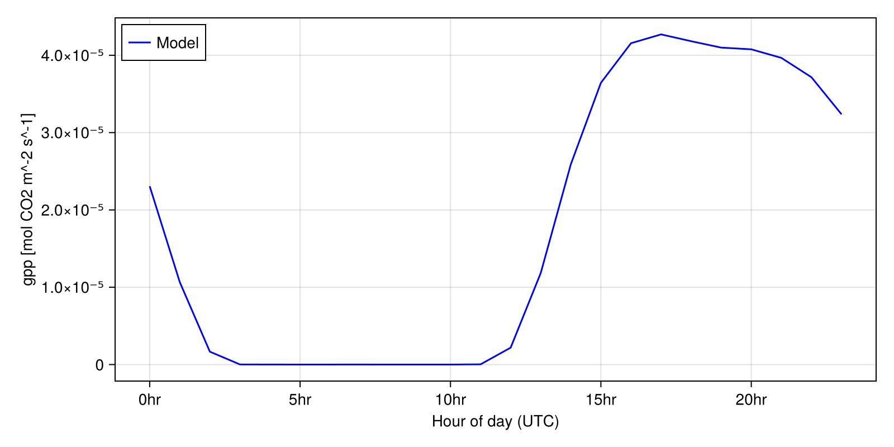
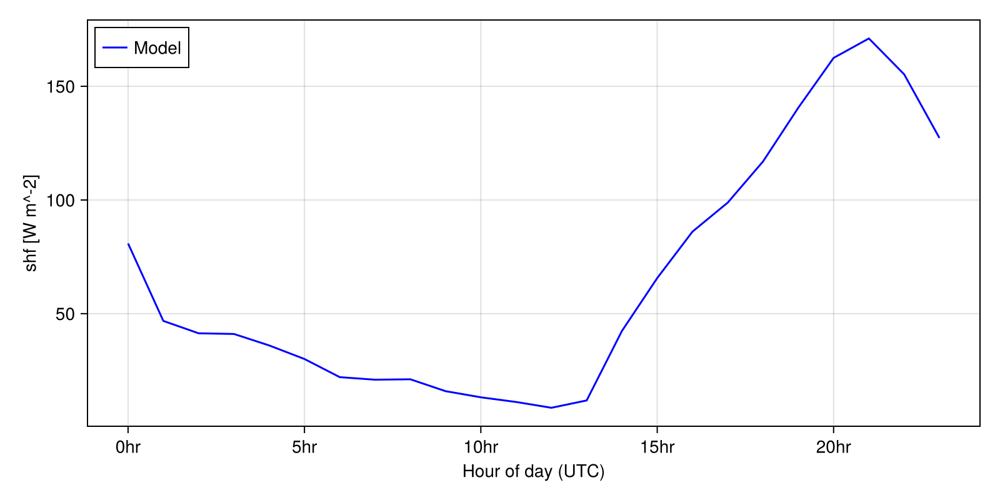
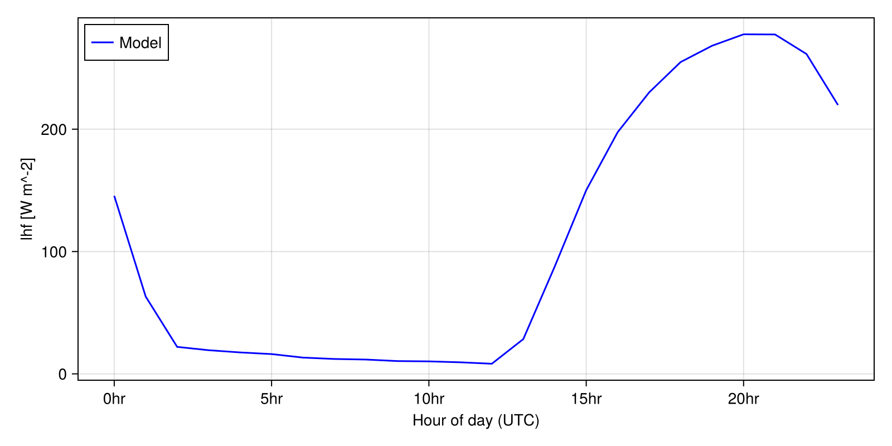
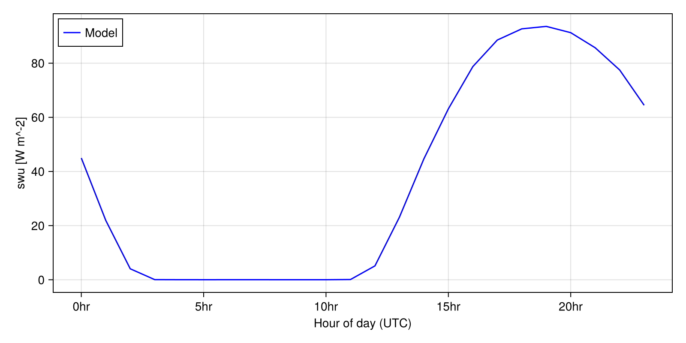
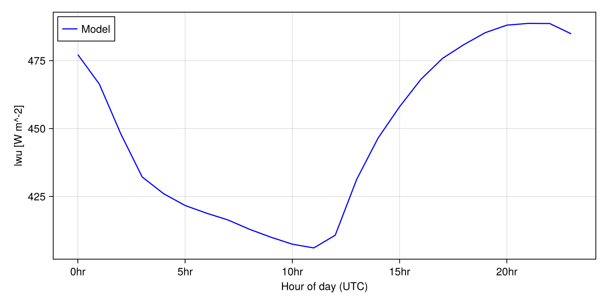

Fluxnet simulations with an integrated soil and canopy model
In the standalone canopy tutorial, we demonstrated how to run the canopy model in standalone mode using a prescribed soil moisture and ground temperature. ClimaLand can also integrate the canopy model with a prognostic soil model and timestep the two components together to simulate an interacting canopy-soil system. This tutorial demonstrates how to set that up. We use initial conditions, atmospheric and radiative flux conditions, and leaf area index observed at the US-MOz flux tower, a flux tower located within an oak-hickory forest in Ozark, Missouri, USA. The forcing data was obtained from AmeriFlux FLUXNET: https://doi.org/10.17190/AMF/1854370
Citation: Jeffrey Wood, Lianhong Gu (2025), AmeriFlux FLUXNET-1F US-MOz Missouri Ozark Site, Ver. 5-7, AmeriFlux AMP, (Dataset). https://doi.org/10.17190/AMF/1854370
The focus of this tutorial is to learn the steps towards setting up and running an integrated simulation, and less on the parameterization choices. As such, the default parameters are implicitly set. To experiment with modularity in the parameters and parameterizations, please see the canopy parameterizations tutorial or the soil parameterizations tutorial.
Preliminary Setup
using Dates
import ClimaParams as CP
using ClimaDiagnostics
using ClimaLand
using ClimaLand.Domains: Column
using ClimaLand.Simulations
import ClimaLand.Parameters as LP
using DelimitedFiles
import ClimaLand.FluxnetSimulations as FluxnetSimulations
using CairoMakie, ClimaAnalysis, GeoMakie, Printf, StatsBase
import ClimaLand.LandSimVis as LandSimVis;Define the floating point precision desired (64 or 32 bit), and get the parameter set holding constants used across CliMA Models.
const FT = Float32;
toml_dict = LP.create_toml_dict(FT);
earth_param_set = LP.LandParameters(toml_dict);We will use prescribed atmospheric and radiative forcing from the US-MOz tower.
site_ID = "US-MOz";
site_ID_val = FluxnetSimulations.replace_hyphen(site_ID);Get the latitude and longitude in degrees, as well as the time offset in hours of local time from UTC
(; time_offset, lat, long) =
FluxnetSimulations.get_location(FT, Val(site_ID_val));Get the height of the sensors in m
(; atmos_h) = FluxnetSimulations.get_fluxtower_height(FT, Val(site_ID_val));Setup the domain for the model. This corresponds to a column of 2m in depth, with 10 equally spaced layers. The lat and long are provided so that we can look up default parameters for this location using the default ClimaLand parameter maps.
zmin = FT(-2) # in m
zmax = FT(0) # in m
domain = Column(; zlim = (zmin, zmax), nelements = 10, longlat = (long, lat));Set a start and stop date of the simulation in UTC, as well as a timestep in seconds
start_date = DateTime("2010-05-01", "yyyy-mm-dd")
stop_date = DateTime("2010-09-01", "yyyy-mm-dd")
Δt = 450.0;Forcing data for the site - this uses our interface for working with Fluxnet data
forcing = FluxnetSimulations.prescribed_forcing_fluxnet(
site_ID,
lat,
long,
time_offset,
atmos_h,
start_date,
earth_param_set,
FT,
);LAI for the site - this uses our interface for working with MODIS data.
LAI = ClimaLand.Canopy.prescribed_lai_modis(
domain.space.surface,
start_date,
stop_date,
);Setup the integrated model
We want to simulate the canopy-soil system together, so we pick the model type SoilCanopyModel Here we use the highest level model constructor, which uses default parameters, and parameterizations, for the soil and canopy models.
land_model = SoilCanopyModel{FT}(forcing, LAI, toml_dict, domain);
set_ic! = FluxnetSimulations.make_set_fluxnet_initial_conditions(
site_ID,
start_date,
time_offset,
land_model,
);
output_vars = ["gpp", "swu", "lwu", "shf", "lhf"]
diagnostics = ClimaLand.default_diagnostics(
land_model,
start_date;
output_writer = ClimaDiagnostics.Writers.DictWriter(),
output_vars,
reduction_period = :hourly,
);Choose how often we want to update the forcing.
data_dt = Second(FluxnetSimulations.get_data_dt(site_ID));Now we can construct the simulation object and solve it.
simulation = Simulations.LandSimulation(
start_date,
stop_date,
Δt, # seconds
land_model;
set_ic!,
updateat = Second(data_dt),
user_callbacks = (),
diagnostics,
);
solve!(simulation);Plotting results, ignoring the first 20 days as spinup
LandSimVis.make_diurnal_timeseries(
simulation;
short_names = ["gpp", "shf", "lhf", "swu", "lwu"],
spinup_date = start_date + Day(20),
plot_stem_name = "US_MOz_diurnal_timeseries",
);    
This page was generated using Literate.jl.